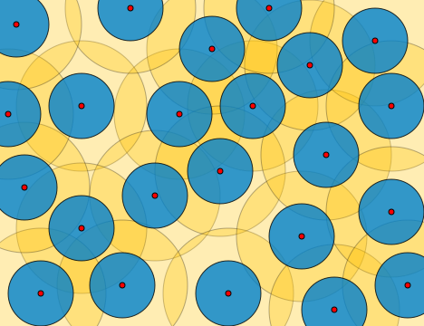

Chapter 3 - Topological Spaces
3.11 Compactness in Metric Spaces
Results
Definition 1
Let $R = (X, \rho)$ be a metric space and $\eps$ any positive number. Then a set $A\subset R$ is said to be
an $\eps$-net for a set $M\subset R$ if, for every $x\in M$, there is at least one point $a\in A$ such that
$\rho(x, a)\leq\eps$.
An illustration.
The red points form part of an $\eps$-net for the Euclidean plane, where $\eps$ is the radius of the large yellow disks.
The blue disks of half the radius are disjoint, and the yellow disks together cover the whole plane, satisfying
the two definitional requirements on an $\eps$-net.

Definition 2
Given a metric space $R$ and a subset $M\subset R$, suppose $M$ has a
finite $\eps$-net for every $\eps > 0$.
Then $M$ is said to be
totally bounded.
Theorem 1
Every countably compact metric space $R$ is totally bounded.
Corollary 1
Every countably compact metric space has a countable everywhere dense subset and a countable base.
Corollary 2
Every countably compact metric space is compact.
Theorem 2
A metric space $R$ is compact if and only if it is totally bounded and complete.
Problem 1
asd
Proof.
■
Problem 2
asd
Proof.
■
Problem 3
asd
Proof.
■
Problem 4
asd
Proof.
■
Problem 5
asd
Proof.
■